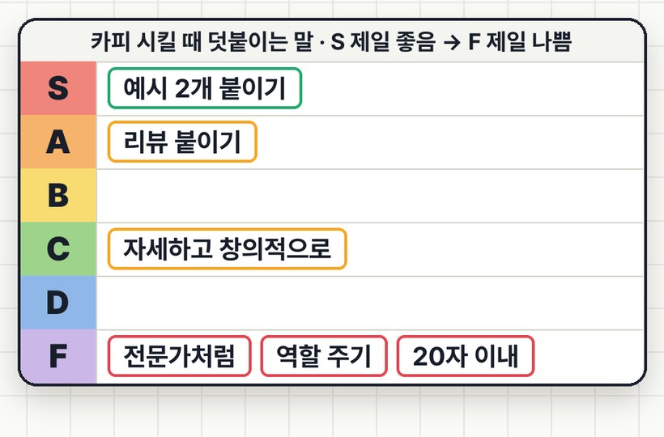

마케터 프롬프트 티어표,
'전문가처럼'은 F예요
같은 앰플 카피 요청에 덧붙이는 말만 여섯 가지로 바꿔 3번씩 돌리고, 5개 중 바로 쓸 카피가 몇 개 나오나 세서 S부터 F까지 매겼어요. 역할 주기("너는 10년 차 마케터야")는 그냥 시킨 것보다 나은 게 없었고, 잘된 카피 예시 2개를 붙이자 바로 쓸 카피가 두 배가 됐어요. 그래서 결론은 하나예요: GPT로 카피 뽑을 땐 역할 말고, 잘된 카피 예시 두 개를 붙이세요.
01결과 티어

| 칸 | 방식 | 뻔한 카피 (5개 중) | 구체 단어 | 바로 쓸 카피 (5개 중) | 평균 길이 |
|---|---|---|---|---|---|
| S | 잘된 예시 2개 붙이기 | 1.0 | 5.7 | 4.0 | 34자 |
| A | 리뷰 · 특징 붙이기 | 0.0 | 14.0 | 3.7 | 113자 |
| C | 자세히 · 창의적으로 | 2.0 | 6.0 | 0.0 | 243자 |
| F | 역할 부여 | 5.0 | 3.0 | 1.7 | 65자 |
| F | 글자 수 · 개수 지정 | 5.0 | 2.0 | 0.7 | 12자 |
| 기준 | 그냥 요청 | 5.0 | 2.3 | 2.0 | 67자 |
숫자는 3회 평균이에요. 뻔한 카피 = 브랜드 이름만 바꾸면 다른 앰플 광고에도 그대로 쓸 수 있는 문장(적을수록 좋음). 구체 단어 = 시간·숫자·상황·성분·사용량처럼 제품과 고객에서 나온 말. 바로 쓸 카피 = 고치지 않고 인스타 광고에 올릴 수 있는 문장.
'자세히·창의적으로'는 장면은 생기지만 카피 하나가 평균 243자로 길어져 그대로 쓸 수 있는 게 없었어요. 리뷰를 붙이면 '3방울', '오후 3시' 같은 진짜 말이 나오고, 잘된 예시 2개를 붙이면 말투·길이까지 따라와서 바로 쓸 카피가 가장 많았어요.
02프롬프트 6개 원문
ChatGPT에 그대로 넣었어요. 제품 이름·리뷰·예시 카피만 내 것으로 바꾸세요. 리뷰와 예시 카피는 이번 시험을 위해 만든 예시예요(가상 브랜드 '허니 뷰티').
허니 뷰티 수분 앰플 인스타 광고 카피 5개 써 줘. 아래는 우리 브랜드에서 반응이 좋았던 카피 2개야. 이 말투·길이·구조를 따라 써 줘. 예시 1: 오후 3시, 아직도 얼굴 당기세요? 3방울이면 퇴근까지 촉촉. 예시 2: 파데 뜨는 날, 범인은 화장품이 아니라 속건조예요.
허니 뷰티 수분 앰플 인스타 광고 카피 5개 써 줘. 아래는 실제 구매자 리뷰와 제품 특징이야. 여기서 나온 말을 살려서 써 줘. [리뷰] 1. 세안하고 바로 바르면 당김이 없어져요. 오후 3시에도 안 땡겨요 2. 꿀 냄새 날 줄 알았는데 향이 거의 없어서 좋아요 3. 스포이드로 3방울이면 얼굴 전체 충분 4. 화장 전에 바르면 파데가 안 떠요 5. 끈적임 없이 흡수가 빨라서 아침에 쓰기 좋아요 6. 사무실 히터 때문에 건조했는데 이거 쓰고 각질이 줄었어요 7. 한 병으로 두 달 넘게 썼어요 8. 민감한 편인데 따가움 없었어요 9. 남편도 몰래 쓰더라고요 10. 밤에 듬뿍 바르고 자면 아침에 피부가 촉촉해요 [제품 특징] - 꿀 추출물 + 히알루론산 5종 - 무향, 민감성 테스트 완료 - 30ml, 하루 2번 기준 약 2개월
허니 뷰티 수분 앰플 인스타 광고 카피 5개 써 줘. 자세하고 창의적으로.
너는 10년 차 뷰티 마케터야. 허니 뷰티 수분 앰플 인스타 광고 카피 5개 써 줘
허니 뷰티 수분 앰플 인스타 광고 카피 5개 써 줘. 각 20자 이내, 5개 중 2개는 질문형으로.
허니 뷰티 수분 앰플 인스타 광고 카피 5개 써 줘
우리 광고 중 클릭률·저장이 가장 좋았던 카피 2개를 그대로 붙여요. 2개가 서로 다른 구조(질문형 1 + 상황형 1)면 결과도 한쪽으로 쏠리지 않아요. 예시가 없으면 경쟁사 말고 우리 브랜드 문장을 쓰세요. 말투가 그대로 따라와요.
상세페이지·쇼핑몰 리뷰에서 숫자·시간·상황이 들어간 문장(3방울, 오후 3시, 사무실 히터)을 10개쯤 골라 붙이고, 제품 특징은 3줄로 정리해요. 이번 시험에서 리뷰를 붙이자 뻔한 카피가 0개가 됐어요. 다만 카피가 길어지기 쉬워서 "각 40자 이내"를 같이 써 주면 좋아요.
03어떻게 시험했나
- 도구: ChatGPT 웹(Plus, 기본 모델 · 추론 Medium), 2026-10-24.
- 매번 임시 채팅으로 새 대화를 열어 같은 순서로 넣었어요. 방식마다 3번씩, 모두 18번.
- 채점: 18개 답을 순서를 섞고 어떤 프롬프트였는지 가린 채(블라인드) 별도 AI가 위 기준으로 채점했어요. 채점 뒤에 이름표를 다시 붙였어요.
- 방식마다 3번뿐이고 모델도 하나예요. 다른 모델·다른 제품에서는 순위가 달라질 수 있어요.
- 채점도 AI가 했어요. 사람이 보면 기준이 조금 다를 수 있어요.
- 임시 채팅 화면에 "메모리·사용자 지정 지침을 참조할 수 있다"는 안내가 있었어요. 그래서 개인 설정 영향이 전혀 없었다고는 말할 수 없어요.
- '역할 부여가 무조건 나쁘다'는 뜻은 아니에요. 이 시험에서는 그것만 붙였을 때 그냥 요청과 차이가 없었다는 뜻이에요.
0418건 결과 원문
채점 전에 받은 답 그대로예요(모델의 설명 문장 포함, 이모지·'글쓰기' 표시만 정리).
S · V5 잘된 예시 2개 붙이기 — 3회 결과 원문
1회차
오후만 되면 피부가 땅기세요? 아침 수분 관리부터 바꿔보세요. 파데가 자꾸 들뜨는 날, 쿠션만 덧바르고 계세요? 먼저 속건조부터 살펴보세요. 세수하고 5분, 벌써 얼굴이 땅기세요? 수분 앰플이 필요한 순간. 아침엔 촉촉했는데, 점심엔 푸석푸석? 피부에도 수분 충전이 필요해요. 화장 잘 먹는 날의 비밀? 파데를 바꾸기 전에 수분부터 채워보세요. 추천은 2번과 5번입니다. 기존 고성과 카피처럼 일상에서 겪는 불편함을 먼저 제시하고, 예상과 다른 해결 방향으로 관심을 끄는 구조입니다. 다만 제품의 실제 보습 지속 시간이나 속건조 개선 효과가 확인되지 않아, 효과를 단정하거나 지속 시간을 보장하는 표현은 제외했습니다.
2회차
오후만 되면 피부가 쩍쩍 당기세요? 수분 충전, 아침부터 시작하세요. 아침엔 촉촉했는데 점심엔 푸석? 피부도 수분 보충이 필요해요. 파데가 자꾸 들뜨는 날, 화장 전에 수분부터 채워보세요. 세수하고 5분도 안 돼 당기세요? 피부가 보내는 수분 부족 신호예요. 촉촉하게 발랐는데 왜 또 건조할까요? 겉보다 속당김부터 신경 쓰세요. 기존 반응이 좋았던 카피처럼 일상 속 불편함 → 공감 또는 반전 → 해결 방향 구조로 작성했습니다. 특히 1번과 3번을 우선 테스트하는 것을 추천합니다. 1번은 시간대와 피부 고민을 연결하고, 3번은 메이크업이 들뜨는 상황을 활용해 광고 첫 문장에서 관심을 끌도록 설계했습니다. 제품의 지속 시간이나 실제 보습 효과가 확인되지 않아 효능을 단정하는 표현은 제외했습니다.
3회차
아침엔 촉촉했는데, 점심만 되면 당기세요? 수분 충전부터 다시 시작해요. 화장 잘 먹는 날의 비밀? 파데보다 먼저 바르는 수분 앰플. 히터 켠 사무실, 피부도 바싹 마르나요? 건조할 땐 허니 뷰티 한 방울. 분명 크림까지 발랐는데 왜 또 당길까요? 겉보다 속건조를 먼저 챙기세요. 오후만 되면 코 옆에 파데가 뜨세요? 아침 수분 케어부터 바꿔보세요. 기존 카피의 일상 속 피부 고민 → 질문 또는 반전 → 짧은 해결책 구조를 유지했습니다. 추천은 2번과 5번입니다. 2번은 메이크업 전 수분 케어의 필요성을 짧게 전달하고, 5번은 파운데이션이 뜨는 구체적인 상황으로 공감을 유도합니다. 실제 효능 자료가 제공되지 않아 수분 지속 시간이나 즉각적인 개선 효과를 확정하는 표현은 제외했습니다.
A · V4 리뷰 · 특징 붙이기 — 3회 결과 원문
1회차
실제 구매자 리뷰에서 반복적으로 등장한 속당김, 빠른 흡수, 화장 밀착, 아침 보습, 소량 사용을 각각 광고 소구점으로 잡았습니다. 인스타그램 피드와 릴스 광고에 바로 활용할 수 있도록 짧고 직관적으로 구성했어요. 허니 뷰티 수분 앰플 광고 카피 5종 보습 01. 오후까지 이어지는 촉촉함 💧 오후 3시에도 속당김 없이! 세안 직후부터 오후까지 촉촉하게. 꿀 추출물과 5종 히알루론산으로 채우는 수분 케어. 🍯 허니 뷰티 수분 앰플 메이크업 02. 화장 전 수분 밀착 ✨ 파데 뜨는 날, 화장 전에 3방울! "화장 전에 바르면 파데가 안 떠요." 끈적임 없이 빠르게 흡수되는 수분 앰플. 아침 메이크업 전에도 가볍게! 🍯 허니 뷰티 수분 앰플 나이트 케어 03. 자고 일어나도 촉촉 🌙 자고 일어나도 촉촉! "밤에 듬뿍 바르고 자면 아침에 피부가 촉촉해요." 잠들기 전 채우는 수분 한 겹. 꿀 추출물과 5종 히알루론산의 수분 케어. 🍯 허니 뷰티 수분 앰플 사용감 04. 무향과 산뜻한 흡수 🌿 꿀 앰플인데 꿀 향은 없어요! "향이 거의 없어서 좋아요." 무향에 끈적임 없이 빠른 흡수. 민감성 테스트까지 완료한 데일리 수분 앰플. 🍯 허니 뷰티 수분 앰플 사용량 05. 딱 3방울의 수분 루틴 🍯 단 3방울로 얼굴 전체 촉촉하게! "스포이드로 3방울이면 얼굴 전체 충분." 하루 두 번 사용 기준 약 2개월. 매일 아침저녁 부담 없이 채우는 수분. 💛 허니 뷰티 수분 앰플 30ml 광고 운영 추천 소재 핵심 타겟 추천 형식 01 속당김 오후 건조함을 느끼는 직장인 릴스, 액자형 영상 02 화장 밀착 메이크업을 자주 하는 고객 사용 전후 시연 영상 03 아침 보습 나이트 스킨케어 관심 고객 릴스, 감성형 이미지 04 산뜻한 사용감 향과 끈적임에 민감한 고객 UGC 리뷰형 05 3방울 사용량과 경제성을 고려하는 고객 제품 시연형 첫 A/B 테스트는 01번과 02번을 추천합니다. 01번은 속당김이라는 피부 고민, 02번은 파운데이션이 뜨는 구체적인 상황을 제시하므로 서로 다른 구매 동기를 비교하기 좋습니다. 참고로 '오후 3시에도 속당김 없이'나 '파데가 안 떠요'는 구매자 개인의 사용 후기입니다. 광고 심의 및 표시광고 관점에서는 모든 사용자에게 동일한 효과가 보장되는 표현으로 읽히지 않도록 실제 리뷰 인용 형식으로 활용하는 편이 안전합니다.
2회차
인스타그램 광고에 바로 활용할 수 있도록 실제 구매자 리뷰의 표현을 살린 카피 5종으로 작성했어요. 각 소재마다 서로 다른 구매 이유를 강조했습니다. 01 | 속당김 소구 💧 세안 후 당김, 오후 3시까지 걱정 없이! 세안하고 바로 바르면 당김이 사라지는 느낌! 꿀 추출물과 5종 히알루론산으로 촉촉한 수분 케어. 오후에도 편안했다는 구매자 후기까지 🍯 CTA: 속당김 수분 케어 시작하기 02 | 메이크업 밀착 소구 ✨ 파데 뜨는 아침, 3방울로 준비 끝! "화장 전에 바르면 파데가 안 떠요." 스포이드 3방울로 얼굴 전체 촉촉하게! 빠르게 흡수되고 끈적임 없이 산뜻해서 아침 루틴에 딱 💛 CTA: 촉촉한 메이크업 준비하기 03 | 사무실 건조 소구 🏢 히터 바람에 푸석해진 피부라면? "사무실 히터 때문에 건조했는데 각질이 줄었어요." 건조한 사무실에서도 촉촉한 피부를 위한 수분 앰플. 꿀 추출물과 히알루론산 5종으로 수분 충전! 💦 CTA: 건조한 피부 수분 채우기 04 | 무향 및 사용감 소구 🌿 꿀 앰플인데 꿀 향이 안 난다고? 향에 민감한 분도 주목! 향료 걱정 없이 사용하는 무향 앰플. 민감성 테스트 완료에 빠른 흡수, 끈적임 없는 사용감까지. 매일 부담 없이 💚 CTA: 산뜻한 수분 앰플 만나보기 05 | 나이트 케어 및 경제성 소구 🌙 자기 전 바르고, 아침엔 촉촉하게! "밤에 듬뿍 바르고 자면 아침에 피부가 촉촉해요." 하루 두 번 사용 기준 약 2개월! 30ml 한 병으로 아침부터 밤까지 촉촉한 루틴 🍯 CTA: 매일 촉촉한 루틴 시작하기 광고 운영 추천 5개 소재를 같은 캠페인에서 테스트한다면, 우선 01 속당김, 02 메이크업, 04 사용감을 추천합니다. 서로 다른 구매 동기를 확인하기 좋고, 실제 리뷰로 뒷받침할 수 있는 메시지입니다. 다만 리뷰의 개인적인 경험을 제품의 보편적인 효능으로 단정하지 않도록 주의해야 합니다. 특히 '오후 3시까지', '파데가 안 떠요', '각질이 줄었어요'는 구매자 후기라는 맥락을 유지하는 것이 좋습니다. 04의 '무향'도 향을 느끼지 않는다는 보장은 아니므로 제품 특징 수준에서 표현하는 편이 안전합니다.
3회차
실제 구매자 리뷰의 표현을 살려 인스타그램 광고용 카피 5종으로 구성했습니다. 각 카피는 서로 다른 구매 동기를 겨냥해 A/B 테스트하기 좋도록 만들었습니다. 1. 오후까지 촉촉한 수분감 | 속당김 소구 💧 오후 3시, 아직도 촉촉해요? "세안하고 바르면 당김이 없어져요. 오후 3시에도 안 땡겨요." 🍯 꿀 추출물 + 5종 히알루론산 💦 건조한 피부에 수분 충전 아침부터 오후까지, 촉촉한 피부를 위한 한 병. 👉 허니 뷰티 수분 앰플 만나보기 2. 화장 전 3방울 | 메이크업 밀착 소구 ✨ 파데 뜨는 날, 기초부터 바꿔보세요. "화장 전에 바르면 파데가 안 떠요." 💧 스포이드 3방울로 얼굴 전체에 ⚡ 끈적임 없이 빠르게 흡수 💄 화장 전에도 부담 없는 수분 앰플 메이크업 전, 가볍게 수분부터 채워주세요. 👉 허니 뷰티 수분 앰플 3. 사무실 히터 건조함 | 직장인 공감 소구 🏢 히터 켜면 피부부터 건조해지는 사람? "사무실 히터 때문에 건조했는데 이거 쓰고 각질이 줄었어요." 🍯 꿀 추출물과 5종 히알루론산 💧 건조한 계절을 위한 수분 케어 🌿 끈적임 없이 산뜻하게 건조한 사무실에서도 피부 수분을 챙기는 습관. 👉 지금 허니 뷰티 만나보기 4. 무향과 민감성 테스트 | 순한 사용감 소구 🌿 꿀 앰플인데, 꿀 향이 안 난다고? "꿀 냄새 날 줄 알았는데 향이 거의 없어서 좋아요." ✔️ 무향 포뮬러 ✔️ 민감성 테스트 완료 ✔️ 끈적임 없이 빠른 흡수 "민감한 편인데 따가움 없었어요." 향에 민감한 분도 고려한 데일리 수분 케어. 👉 허니 뷰티 수분 앰플 확인하기 5. 나이트 케어와 사용 기간 | 실용성 소구 🌙 자기 전 바른 3방울, 아침 피부는? "밤에 듬뿍 바르고 자면 아침에 피부가 촉촉해요." 🍯 꿀 추출물 + 5종 히알루론산 💧 아침저녁 수분 케어 🗓️ 30ml 한 병, 하루 2번 기준 약 2개월 "한 병으로 두 달 넘게 썼어요." 매일 아침저녁, 촉촉함을 채우는 습관. 👉 허니 뷰티 수분 앰플 구매하기 광고 테스트 추천 카피 핵심 타깃 주요 검증 지표 1. 오후 3시 촉촉함 속당김 고민 고객 CTR, CVR 2. 파데 밀착 메이크업 사용자 CTR, CVR 3. 히터 건조함 사무직, 건조 피부 CTR, CVR 4. 무향, 민감성 향과 자극에 민감한 고객 CVR 5. 아침 피부, 사용 기간 나이트 케어 관심 고객 CVR, ROAS 첫 테스트는 1번과 2번을 추천합니다. 실제 리뷰에 있는 '오후 3시에도 안 땡겨요', '파데가 안 떠요'라는 표현이 구체적이고, 소비자가 자신의 고민과 바로 연결하기 쉽기 때문입니다. 다만 실제 성과 우위는 테스트로 확인해야 합니다. 참고로 리뷰의 개인 경험을 일반적인 효능처럼 단정하지 않도록 구성했습니다. 특히 민감성 테스트 완료는 모든 사람에게 자극이 없다는 뜻이 아니며, 수분 지속 시간이나 메이크업 밀착 효과도 제품 전체에 대한 검증된 효능으로 확대하지 않는 것이 좋습니다.
C · V2 자세히 · 창의적으로 — 3회 결과 원문
1회차
허니 뷰티 수분 앰플의 인스타그램 광고 카피 5종을 서로 다른 구매 동기와 감성에 맞춰 구성했습니다. 릴스, 피드, 스토리 광고에 활용할 수 있도록 메인 카피, 상세 문안, CTA까지 작성했습니다. 제품의 실제 성분이나 임상 결과는 확인되지 않았으므로, 효능을 확정적으로 보장하는 표현은 제외했습니다. 1. 속당김 공감형 — "겉은 촉촉한데, 속은 왜 당길까?" 💧 겉은 촉촉한데, 속은 왜 당길까? 분명 아침에 스킨케어를 꼼꼼히 했는데, 오후만 되면 다시 느껴지는 건조함. 크림을 덧발라도 뭔가 아쉬웠다면, 이제 수분 케어의 시작을 바꿔보세요. 🍯 허니 뷰티 수분 앰플 매일 반복되는 건조함이 신경 쓰이는 피부에 촉촉한 수분 케어 루틴을 선물하세요. ✨ 아침에는 메이크업 전 수분 케어 ✨ 저녁에는 하루를 마무리하는 보습 루틴 ✨ 건조함이 신경 쓰이는 날에는 한 번 더 오늘도 피부가 건조하게 느껴진다면? 👉 지금 허니 뷰티 수분 앰플 만나보기 추천: 건조함을 고민하는 고객 대상 릴스 광고. 첫 3초에 속당김을 표현하는 장면 활용. 2. 감성 스토리형 — "자고 일어나도 촉촉한 피부를 꿈꾼다면" 🌙 내일 아침의 피부를 위한 작은 습관 하루 종일 바쁘게 움직인 나에게 밤만큼은 조금 더 다정해지고 싶어서. 세안하고, 거울을 보고, 오늘 하루 수고한 피부를 위해 촉촉한 앰플 한 번. 🍯 허니 뷰티 수분 앰플 거창한 관리가 아니어도 괜찮아요. 나를 위해 보내는 단 몇 분의 시간. 오늘 밤의 스킨케어가 내일 아침에도 기분 좋은 기억으로 남도록. 💛 하루의 끝에 더하는 수분 루틴 💛 매일 나를 돌보는 작은 습관 💛 피부를 위한 촉촉한 마무리 잠들기 전, 피부에도 수분을 선물하세요. 👉 지금 구매하기 추천: 20~30대 여성 대상 감성 릴스. 침실, 세안 후 스킨케어, 아침 햇살로 이어지는 영상. 3. 메이크업 고민형 — "화장 전에 필요한 건 수분 한 방울" 💄 오늘도 화장이 들뜬다면? 아침에는 분명 괜찮았는데, 시간이 지나면서 신경 쓰이는 건조함. 쿠션을 다시 두드리기 전에 스킨케어부터 살펴보세요. 🍯 허니 뷰티 수분 앰플 예쁜 메이크업을 준비하는 시간, 수분 케어도 빼놓을 수 없으니까. 💧 세안 후 촉촉하게 💧 메이크업 전 수분 케어 💧 매일 아침 간편한 스킨케어 루틴 메이크업에 신경 쓰는 만큼 그 전에 바르는 앰플에도 신경 써보세요. 화장 전 1분, 수분부터 챙기는 습관. 👉 허니 뷰티 수분 앰플 보러 가기 추천: 뷰티 관심 고객 대상 릴스와 스토리 광고. 화장 전 스킨케어 과정을 강조. 4. 미니멀 루틴형 — "복잡한 스킨케어, 이제는 가볍게" 🍯 바쁜 아침에도, 수분만큼은 놓치지 마세요. 알람은 세 번이나 껐고, 출근 준비는 아직 끝나지 않았고, 스킨케어할 시간은 점점 줄어들고. 그렇다고 피부 관리까지 포기할 필요는 없잖아요? 💛 허니 뷰티 수분 앰플 정신없이 바쁜 아침에도 잠들기 전 피곤한 저녁에도 나만의 수분 케어 루틴을 만들어보세요. 시간이 많아야만 피부에 신경 쓸 수 있는 건 아니니까요. 매일의 수분 케어, 어렵지 않게. 👉 지금 만나보기 추천: 바쁜 직장인 대상 10~15초 릴스. 출근 준비와 짧은 스킨케어 장면을 빠르게 교차 편집. 5. 호기심 유발형 — "피부가 건조할 때, 당신은 무엇부터 바르나요?" 👀 피부가 건조할 때, 무조건 크림부터? 건조함이 느껴질 때마다 무언가를 계속 덧바르고 있다면, 이번에는 수분 앰플을 스킨케어 루틴에 더해보는 건 어떨까요? 🍯 허니 뷰티 수분 앰플 계절이 바뀔 때, 실내 공기가 건조할 때, 세안 후 피부가 당기는 것처럼 느껴질 때. 수분이 신경 쓰이는 순간마다 떠올릴 수 있는 나만의 데일리 앰플. ✨ 아침에도 ✨ 저녁에도 ✨ 매일의 스킨케어에 오늘부터 시작하는 촉촉한 수분 습관. 👉 허니 뷰티 수분 앰플 자세히 보기 추천: 신규 고객 유입을 위한 호기심 유발형 릴스. 질문형 첫 화면으로 시청자의 관심 유도. 광고 테스트 추천 유형 핵심 구매 동기 추천 측정 지표 1. 속당김 공감형 건조함에 대한 문제 인식 CTR, CVR 2. 감성 스토리형 자기 관리와 감성적 만족 3초 시청률, 완주율 3. 메이크업 고민형 화장 전 수분 관리 CTR, CVR 4. 미니멀 루틴형 간편한 스킨케어 CTR, CPA 5. 호기심 유발형 새로운 수분 케어 방법 탐색 3초 시청률, CTR 첫 A/B 테스트는 1번과 3번을 추천합니다. 두 카피 모두 구체적인 피부 고민에서 시작하지만, 하나는 일상적인 건조함을, 다른 하나는 메이크업 전 수분 관리를 강조합니다. 동일한 영상 길이, 광고 대상, 예산과 랜딩페이지 조건에서 비교하면 어떤 구매 동기가 더 효과적인지 확인하기 좋습니다. 단, '자고 일어나도 촉촉', '속당김 끝', '메이크업 밀착력 개선' 같은 표현은 실제 제품의 지속력이나 효능을 암시할 수 있으므로 제품 시험 결과나 적절한 근거를 확인한 후 사용하는 것이 좋습니다.
2회차
허니 뷰티 수분 앰플 인스타그램 광고 카피 5종을 준비했습니다. 각각 다른 소비자 고민과 구매 동기를 자극하도록 구성했으며, 릴스 광고와 피드 광고 모두 활용할 수 있도록 메인 카피, 본문, CTA까지 작성했습니다. 제품의 실제 성분이나 임상 결과가 확인되지 않았으므로, 검증이 필요한 지속 시간이나 효능 수치는 넣지 않았습니다. 1. 속건조 공감형 — “촉촉함이 필요한 순간” 💧 겉은 촉촉한데, 속은 왜 당길까? 아침에 분명 스킨케어를 했는데 오후만 되면 느껴지는 피부 당김. 크림을 덧발라도 아쉽고, 메이크업까지 들뜨면 더 신경 쓰이죠. 🍯 이제 매일의 수분 루틴에 허니 뷰티 수분 앰플을 더해보세요. 건조함이 신경 쓰이는 날에도 내 피부를 위한 촉촉한 한 방울. ✨ 오늘도, 내일도 촉촉한 피부를 위한 작은 습관. 👉 지금 허니 뷰티 수분 앰플을 만나보세요. #허니뷰티 #수분앰플 #속건조고민 #보습케어 #데일리스킨케어 추천 타깃: 오후 피부 당김을 고민하는 20~30대 / 릴스 첫 장면은 오후에 건조함을 느끼는 모습 2. 감성형 — “밤사이 나를 위한 시간” 🌙 잠들기 전 한 방울, 나를 위한 수분 시간. 하루 종일 바빴던 나에게 가장 필요한 건 잠깐의 휴식. 세안을 마친 뒤 차분히 피부를 돌보는 시간. 🍯 허니 뷰티 수분 앰플과 함께 나만의 촉촉한 나이트 루틴을 만들어보세요. 피부에 수분을 더하는 시간은 나 자신을 아끼는 시간이기도 하니까. ✨ 하루의 끝은 부드럽게, 내일의 시작은 산뜻하게. 오늘 밤, 촉촉함을 준비하세요. 👉 허니 뷰티 수분 앰플 자세히 보기 #나이트루틴 #허니뷰티 #수분앰플 #셀프케어 #보습루틴 추천 타깃: 감성 소비자, 자기관리 관심층 / 침실 조명과 앰플 사용 장면 중심 3. 메이크업 고민형 — “화장 전에 필요한 것” 💄 오늘 화장, 왜 이렇게 들뜨지? 파운데이션을 바를 때마다 건조한 부분이 유독 신경 쓰인다면? 메이크업만 신경 쓰지 말고 그 전에 하는 수분 케어도 챙겨보세요. 💧 아침 세안 후 수분 앰플 한 단계. 🍯 허니 뷰티 수분 앰플로 메이크업 전 피부에 촉촉함을 더해주세요. 완벽한 화장법을 찾기 전에 매일의 기초 루틴부터. ✨ 잘 준비한 피부가 오늘의 자신감을 만들어주니까. 👉 지금 나만의 수분 루틴 시작하기 #메이크업전스킨케어 #허니뷰티 #수분앰플 #건조한피부 #기초케어 추천 타깃: 메이크업 관심층 / 들뜬 베이스 표현과 스킨케어 장면 비교, 직접적인 개선 효과 단정은 피하기 4. 재치 있는 후킹형 — “피부에도 수분 충전” 🔋 휴대폰 배터리는 충전하면서, 피부 수분은? 배터리 10%면 바로 충전기부터 찾는데 정작 피부가 당길 때는 그냥 넘기고 있나요? 매일 챙기는 커피 한 잔처럼 수분 케어도 나만의 일상으로! 🍯 허니 뷰티 수분 앰플과 함께 오늘의 수분 루틴도 충전 완료! 💧 바쁜 아침에도, 하루를 마친 밤에도 촉촉함을 챙기는 작은 습관. 피부가 건조하다고 느껴지는 순간, 오늘부터는 그냥 지나치지 마세요. 👉 내 피부를 위한 수분 루틴 시작하기 #수분충전 #허니뷰티 #수분앰플 #스킨케어루틴 #보습앰플 추천 타깃: 20대 숏폼 이용자 / 배터리 부족 알림을 활용한 영상 후킹 5. 프리미엄 감각형 — “한 방울의 여유” 🍯 촉촉함에도 취향이 있다. 많이 바르는 것보다 매일 나에게 맞는 루틴을 찾는 것. 복잡한 스킨케어 사이에서 잠시 나만의 수분 케어에 집중해보세요. 허니 뷰티 수분 앰플 하루의 시작과 끝에 더하는 촉촉한 스킨케어 한 단계. 화려한 루틴이 아니어도 괜찮아요. 나를 위한 작은 시간을 꾸준히 챙기는 것. ✨ 매일의 피부 관리가 조금 더 특별해지는 순간. YOUR DAILY HYDRATION RITUAL. 👉 허니 뷰티 수분 앰플 만나보기 #허니뷰티 #수분앰플 #데일리뷰티 #스킨케어 #수분케어 추천 타깃: 프리미엄 뷰티 관심층 / 크림색 배경과 앰플 제형 클로즈업 광고 운영 관점 추천 유형 핵심 소구점 추천 소재 테스트 우선순위 1. 속건조 공감형 피부 당김 고민 릴스, 피드 1순위 2. 나이트 감성형 자기관리와 휴식 릴스 4순위 3. 메이크업 고민형 화장 전 수분 관리 릴스, UGC 2순위 4. 수분 충전형 재미있는 첫 3초 릴스 3순위 5. 프리미엄형 브랜드 이미지 피드, 스토리 5순위 첫 A/B 테스트는 1번과 3번을 추천합니다. 소비자의 구체적인 고민을 전면에 제시해 메시지 반응을 비교하기 좋습니다. 단, 이 순위는 실제 성과 데이터가 아닌 광고 메시지의 명확성을 기준으로 정한 테스트 가설입니다. 첫 3초 후킹 문구는 각각 “오후만 되면 피부가 당긴다면?”, **“화장 전에 이것부터 챙기세요”**로 시작하고, 나머지 영상 구성과 CTA를 동일하게 유지하면 카피 차이에 따른 성과를 비교하기 좋습니다.
3회차
허니 뷰티 수분 앰플의 인스타그램 광고 카피 5종을 서로 다른 구매 동기와 소비자 고민을 중심으로 구성했습니다. 릴스와 피드 광고에 모두 활용할 수 있도록 메인 카피, 상세 광고 문구, CTA까지 작성했습니다. 1. 속당김 공감형 — "촉촉함에도 유통기한이 있나요?" 💧 아침에 발랐는데, 오후엔 왜 또 건조할까? 분명 아침에는 촉촉했는데 점심만 지나면 느껴지는 속당김. 수분크림을 덧발라도 잠깐뿐이라면? 🥹 이제 매일 반복되는 건조함 고민에 달콤한 수분 루틴을 더해보세요. 🍯 허니 뷰티 수분 앰플 바쁜 아침에도, 지친 저녁에도 내 피부를 위한 촉촉한 한 방울. ✨ 오늘부터 달라지는 나의 수분 루틴. 👉 지금 허니 뷰티를 만나보세요. #허니뷰티 #수분앰플 #속당김 #수분케어 #스킨케어추천 추천 타겟: 오후에 피부 건조함을 느끼는 20~30대 직장인 릴스 연출: 오전 9시 촉촉한 피부 → 오후 3시 건조함을 느끼는 표정 → 앰플을 사용하는 장면 2. 감성 스토리형 — "피부에도 달콤한 시간이 필요해" 🍯 오늘 하루, 피부는 얼마나 지쳤나요? 쉴 틈 없이 흘러간 하루. 바쁜 일정에 나를 돌볼 시간도 부족했다면, 오늘 밤만큼은 피부에도 달콤한 휴식을 선물해 주세요. 🌙 한 방울씩 천천히, 나를 위한 시간을 채우는 순간. 💛 허니 뷰티 수분 앰플과 함께하는 나만의 작은 스킨케어 루틴. 거창한 관리가 아니어도 괜찮아요. 매일 나를 챙기는 작은 습관이면 충분하니까. 오늘의 마지막은 촉촉하게. 👉 허니 뷰티로 시작하는 나이트 루틴 #허니뷰티 #나이트루틴 #수분앰플 #셀프케어 #데일리스킨케어 추천 타겟: 자기관리, 뷰티 루틴, 감성 콘텐츠에 반응하는 20~30대 릴스 연출: 따뜻한 조명 → 세안 → 앰플 한 방울 → 편안한 침실 무드 3. 메이크업 고민 해결형 — "화장이 아니라 수분이 문제일지도" 💄 아침엔 완벽했는데, 오후엔 들뜨는 메이크업? 공들여 완성한 베이스 메이크업. 그런데 시간이 지나면 자꾸 들뜨고, 건조한 부분만 눈에 띈다면? 쿠션을 한 번 더 두드리기 전에 아침 스킨케어부터 돌아보세요. 👀 ✨ 메이크업 전에 챙기는 수분 루틴 🍯 허니 뷰티 수분 앰플 화장을 시작하기 전, 피부에 촉촉함을 더하는 작은 습관. 매일 아침 반복되는 피부 고민, 이제 수분 케어부터 시작해 보세요. 예쁜 메이크업을 위한 첫 단계, 수분. 👉 지금 허니 뷰티 수분 앰플 만나보기 #허니뷰티 #메이크업전스킨케어 #수분앰플 #베이스메이크업 #아침루틴 추천 타겟: 메이크업, 쿠션, 파운데이션 등에 관심이 높은 20~30대 여성 릴스 연출: 오후에 들뜬 메이크업 클로즈업 → 아침 스킨케어 루틴 소개 → 앰플 제형 클로즈업 4. 후킹 질문형 — "수분크림까지 발랐는데도?" 🚨 수분크림까지 발랐는데 왜 계속 당길까? 토너도 바르고, 크림도 발랐는데 시간만 지나면 다시 느껴지는 건조함. 혹시 이런 고민, 매일 반복하고 있나요? 💦 이제 스킨케어 루틴에 수분 앰플 한 단계를 더해보세요. 🍯 허니 뷰티 수분 앰플 복잡한 관리보다 중요한 건 내 피부에 맞는 수분 케어를 꾸준히 하는 것. 아침에도 저녁에도 촉촉함을 챙기고 싶은 당신을 위해. 건조함을 그냥 참지 마세요. 👉 오늘부터 허니 뷰티 수분 루틴 시작하기 #허니뷰티 #속건조고민 #수분앰플 #건조한피부 #데일리케어 추천 타겟: 건조함, 속당김, 기초화장품 관련 콘텐츠에 관심이 높은 소비자 릴스 연출: 첫 2초에 큰 자막 "수분크림 발랐는데도?" → 제품 제형 → 사용 루틴 5. 위트 있는 구매 유도형 — "내 피부가 원하는 건 딱 하나" 🍯 연애는 밀당, 피부는 수분만 주세요. 썸에서는 밀당이 통할지 몰라도 내 피부에 필요한 건 밀당이 아니라 수분! 💦 아침부터 저녁까지 건조함 때문에 신경 쓰이는 하루라면? 이제 피부와의 밀당은 그만. 💛 허니 뷰티 수분 앰플 매일의 스킨케어에 달콤한 촉촉함을 더해보세요. 복잡한 루틴이 부담스러운 날에도 수분 케어만큼은 잊지 않기! 밀당 말고 수분 충전. 💧 👉 지금 허니 뷰티 만나보기 #허니뷰티 #밀당말고수분 #수분앰플 #스킨케어 #뷰티템 추천 타겟: 짧고 재치 있는 콘텐츠를 선호하는 20대 중심의 인스타그램 이용자 릴스 연출: "나한테 필요한 밀당?" 질문 → "아니, 수분!" 전환 → 제품 등장 광고 운영 관점에서 추천하는 테스트 유형 핵심 후킹 카피 우선 테스트 지표 1. 속당김 공감형 아침에 발랐는데 오후엔 왜 건조할까? CTR, 구매 CVR 2. 감성 스토리형 피부에도 달콤한 시간이 필요해 3초 조회율, 시청 유지율 3. 메이크업 고민형 화장이 아니라 수분이 문제일지도 CTR, 구매 CVR 4. 후킹 질문형 수분크림까지 발랐는데도? 3초 조회율, CTR 5. 위트형 연애는 밀당, 피부는 수분만 공유율, CTR 1차 테스트에서는 1번과 4번을 추천합니다. 피부 고민을 직접 언급하고 제품 사용 이유를 빠르게 전달하기 때문에 신규 고객 대상 광고에서 우선 검증할 가치가 있습니다. 다만 실제 성과 우위는 집행 데이터로 확인해야 합니다. 참고로 현재 제품의 전성분, 임상 결과, 상세페이지 자료는 제공되지 않았으므로 24시간 보습, 속건조 개선, 피부 장벽 강화, 메이크업 지속력 개선 같은 효능 주장은 의도적으로 제외했습니다. 이러한 표현은 제품별 객관적 근거가 확인된 뒤 적용하는 것이 안전합니다.
F · V1 역할 부여 — 3회 결과 원문
1회차
인스타그램 릴스와 피드 광고에 활용할 수 있도록 짧은 후킹 카피 + 제품 소구 + 구매 유도 문구로 5가지 콘셉트를 구성했습니다. ① 1. 속건조 공감형 (추천) ② 2. 아침 루틴형 ③ 3. 메이크업 전 보습형 💧 겉은 촉촉한데 속은 당긴다면? 건조함이 신경 쓰이는 피부에 허니 뷰티 수분 앰플로 촉촉한 보습 케어 🍯 ✨ 오늘부터 시작하는 수분 루틴 👉 지금 만나보세요! 광고 운영 관점 추천 콘셉트 핵심 후킹 문구 활용 추천 1. 속건조 공감형 겉은 촉촉한데 속은 당긴다면? 릴스, 신규 고객 2. 아침 루틴형 자고 일어나도 촉촉한 피부를 꿈꾼다면? 릴스, 일상 UGC 3. 메이크업 보습형 화장 전, 수분부터 챙기세요! 메이크업 루틴 영상 4. 감성 뷰티형 피부에 선물하는 달콤한 수분 시간 브랜드 이미지 광고 5. 문제 해결형 세안하고 나면 바로 당기는 피부? 전환 목적 피드 광고 가장 먼저 테스트할 카피는 1번과 5번입니다. 두 카피 모두 소비자가 경험하는 건조함을 첫 문장에서 제시하기 때문에 제품 소개형 카피와 비교해 초반 주목도를 확인하기 좋습니다. 실제 성과 우위는 A/B 테스트로 검증해야 합니다. 참고로 제품의 실제 성분, 보습 지속 시간, 임상시험 결과는 확인되지 않아 '24시간 보습', '속당김 즉시 해결' 같은 입증이 필요한 표현은 제외했습니다.
2회차
인스타그램 릴스와 피드 광고에서 활용할 수 있도록 짧은 후킹 문구 + 제품 소구 + 구매 유도 구조로 5개 작성했습니다. 제품의 구체적인 효능이 확인되지 않았으므로 과장된 효과 표현은 제외했습니다. 1. 속건조 공감형 💧 겉은 촉촉한데, 속은 당긴다면? 매일 반복되는 건조함이 고민일 때 허니 뷰티 수분 앰플로 촉촉한 보습 케어 🍯 ✨ 오늘부터 시작하는 수분 루틴 👉 지금 만나보세요! 2. 나이트 케어형 🌙 자고 일어나도 촉촉하고 싶다면? 하루의 끝, 피부에도 수분을 채워줄 시간. 🍯 허니 뷰티 수분 앰플 잠들기 전 수분 케어 루틴으로 촉촉한 아침을 준비하세요. 👉 지금 구매하기 3. 메이크업 전 루틴형 💄 화장 전, 수분부터 챙기세요! 건조함이 신경 쓰이는 아침, 메이크업 전에 더하는 촉촉한 한 단계. 💧 허니 뷰티 수분 앰플 매일 아침 수분 케어를 시작해 보세요. 👉 자세히 보기 4. 감성 뷰티형 🍯 피부에도 달콤한 수분 한 방울 오늘도 건조함이 고민이었다면, 나를 위한 촉촉한 시간을 선물하세요. ✨ 매일 손이 가는 수분 루틴 허니 뷰티 수분 앰플 👉 지금 만나보기 5. 직관적 구매 유도형 💦 건조한 피부, 수분 케어가 필요할 때! 복잡한 고민 대신 매일 촉촉하게 관리하는 습관. 🍯 허니 뷰티 수분 앰플로 오늘의 보습 루틴을 완성하세요. 🛍️ 지금 구매하기 광고 운영 추천 카피 추천 소재 테스트 목적 1. 속건조 공감형 고민 제시형 릴스 문제 공감 반응 2. 나이트 케어형 취침 전 루틴 영상 사용 상황별 반응 3. 메이크업 전 루틴형 GRWM 릴스 메이크업 관심 고객 반응 4. 감성 뷰티형 제품 클로즈업 브랜드 관심 유도 5. 구매 유도형 제품 중심 이미지 구매 의도 유도 1차 A/B 테스트는 1번과 2번을 추천합니다. 동일한 영상과 광고 대상에서 첫 문구만 바꾸면, '건조함에 대한 공감'과 '촉촉한 아침에 대한 기대' 중 어떤 메시지가 더 높은 반응을 만드는지 비교할 수 있습니다. 단, 실제 광고 집행 전에는 제품 상세페이지와 효능 근거를 확인해야 합니다. 특히 '속당김 끝', '자고 일어나도 촉촉'처럼 효과를 단정할 수 있는 표현은 관련 실증 자료가 있는 경우에 사용하는 것이 안전합니다.
3회차
인스타그램 릴스와 피드 광고에 활용할 수 있도록 첫 문장에서 시선을 끌고, 수분 앰플의 장점을 직관적으로 전달하는 카피 5개를 작성했습니다. 01 속당김 공감형 💧 겉은 촉촉한데 속은 당긴다면? 매일 반복되는 건조함, 수분 케어부터 바꿔보세요. 🍯 허니 뷰티 수분 앰플 촉촉한 피부를 위한 데일리 수분 루틴 👉 지금 만나보세요! 02 아침 루틴형 ✨ 아침 피부가 달라지는 수분 루틴 건조함이 신경 쓰이는 아침, 촉촉한 하루를 준비하는 첫 단계! 🍯 허니 뷰티 수분 앰플로 매일 아침 수분 케어를 시작하세요. 👉 나만의 수분 루틴 시작하기 03 메이크업 고민형 💄 화장 전에, 수분부터 챙기세요. 건조한 피부가 신경 쓰이는 날, 메이크업 전에 필요한 건 수분 케어! 🍯 허니 뷰티 수분 앰플 촉촉한 피부 준비를 위한 한 단계 👉 수분 앰플 확인하기 04 간결한 후킹형 🍯 피부가 수분을 원할 때! 건조함이 고민이라면? 오늘부터 수분 루틴에 집중하세요. 💧 허니 뷰티 수분 앰플 매일 챙기는 촉촉한 피부 습관 👉 지금 구매하기 05 환절기 고민형 🍂 날씨가 바뀌면, 수분 루틴도 점검! 찬 바람과 건조한 실내 공기, 피부 수분 관리가 신경 쓰이는 계절. 🍯 허니 뷰티 수분 앰플로 매일 촉촉함을 챙겨보세요. 👉 지금 확인하기 광고 운영 추천 1번과 4번을 우선 A/B 테스트하는 것을 추천합니다. 1번: 속당김이라는 구체적인 피부 고민으로 공감 유도 4번: 짧고 직관적인 메시지로 릴스 첫 3초 후킹에 적합 3번: 메이크업 전 스킨케어에 관심 있는 고객을 겨냥한 별도 테스트에 적합 현재 제품의 실제 임상 결과나 성분 정보가 없으므로, '24시간 보습', '속건조 즉시 개선', '자고 일어나도 촉촉'처럼 효능 입증이 필요한 표현은 제외했습니다. 제품의 보습력 시험 결과나 상세페이지가 있다면 더 강한 전환 중심 카피로 발전시킬 수 있습니다.
F · V3 글자 수 · 개수 지정 — 3회 결과 원문
1회차
💧 자고 일어나도 촉촉 🍯 피부에 달콤한 수분 충전 ✨ 매일 빛나는 촉촉한 피부 💦 속당김, 아직도 고민인가요? 🍯 촉촉한 피부를 원하세요? 1~3번은 혜택 강조형, 4~5번은 질문형입니다. 모두 이모지 포함 20자 이내이며, 1번을 가장 추천합니다. 다만 실제 지속 보습 효과가 확인되지 않았다면 '자고 일어나도' 표현은 검토가 필요합니다.
2회차
💧 자고 일어나도 촉촉하게 🍯 피부에 채우는 꿀보습 ✨ 촉촉한 피부의 시작 💦 속당김, 아직도 고민이세요? 🍯 건조한 피부에 꿀보습 어때요? 1~3번은 혜택 강조형, 4~5번은 질문형입니다. 모두 공백과 이모지 포함 20자 이내입니다.
3회차
🍯 피부에 달콤한 수분 한 방울 💧 건조한 피부, 고민이신가요? ✨ 촉촉함이 필요한 순간은? 🍯 허니 뷰티로 채우는 수분 💛 매일 촉촉하게, 허니 앰플 2번과 3번은 질문형, 나머지 3개는 혜택 강조형입니다. 모두 이모지 포함 20자 이내입니다.
기준 · V0 그냥 요청 — 3회 결과 원문
1회차
인스타그램 릴스와 피드 광고에 활용할 수 있도록 짧고 직관적인 후킹 카피 5개로 작성했습니다. 수분감과 촉촉한 피부 표현을 중심으로 구성했습니다. 1. 💧 자고 일어나도 촉촉! 건조한 피부에 필요한 수분 충전 🍯 매일 촉촉한 피부를 위한 선택 허니 뷰티 수분 앰플 ✨ 2. 🍯 피부가 꿀 먹은 듯! 푸석한 피부에 촉촉함 한 스푼 오늘부터 시작하는 수분 케어 💛 허니 뷰티 수분 앰플 3. ✨ 메이크업 전, 수분부터! 화장이 들뜨는 건조한 피부 고민 촉촉한 피부 바탕을 위한 첫 단계 💧 허니 뷰티 수분 앰플 4. 💛 건조함 대신 촉촉함! 매일 반복되는 피부 당김 고민 수분 케어로 시작하는 촉촉한 하루 🍯 허니 뷰티 수분 앰플 5. 🌙 밤사이 수분 케어! 잠들기 전 피부에 촉촉함을 더해요 내일 아침 피부를 위한 수분 루틴 ✨ 허니 뷰티 수분 앰플 광고 테스트 추천: 1번은 아침까지 촉촉하길 바라는 니즈, 2번은 감성적인 피부 표현, 3번은 메이크업 고민을 겨냥한 카피입니다. 서로 다른 소구점을 비교하는 A/B 테스트에 적합합니다. 다만 실제 제품의 보습 지속 시간이나 효능 자료를 확인하지 않았으므로, '24시간 보습', '속당김 즉시 해결' 같은 검증이 필요한 표현은 제외했습니다.
2회차
인스타그램 릴스와 피드 광고에 활용할 수 있는 허니 뷰티 수분 앰플 카피 5종입니다. 수분감과 촉촉한 피부 표현을 중심으로 각기 다른 소구점을 잡았습니다. 🍯 자고 일어나도 촉촉한 피부 건조한 피부에 달콤한 수분 한 방울 💧 매일 아침, 촉촉한 피부 루틴을 시작하세요. ✨ 허니 뷰티 수분 앰플 👉 지금 만나보세요! 💦 건조한 피부에 수분 충전! 세안 후 느껴지는 피부 당김, 신경 쓰였다면? 촉촉한 수분 케어로 시작하는 하루 ✨ 🍯 허니 뷰티 수분 앰플 🛒 지금 확인하기 ✨ 피부가 좋아 보이는 비결? 메이크업 전, 놓치지 말아야 할 수분 케어! 촉촉한 피부 바탕을 위한 데일리 루틴 💛 🍯 허니 뷰티 수분 앰플 👉 지금 만나보세요. 🍯 오늘 피부, 꿀처럼 촉촉하게 매일 반복되는 건조함이 고민이라면? 하루의 시작과 끝을 수분 케어로 채워보세요. 💧 허니 뷰티 수분 앰플 💕 나를 위한 촉촉한 습관 💛 수분 케어, 어렵게 하지 마세요 복잡한 루틴보다 중요한 건 꾸준한 관리! 매일 손이 가는 촉촉한 피부 습관 💦 🍯 허니 뷰티 수분 앰플 🛍️ 지금 구매하기 광고 운영 추천: 릴스 첫 3초 후킹에는 1번과 2번, 메이크업 관련 영상에는 3번을 추천합니다. 4번은 감성형, 5번은 간편한 루틴을 강조하는 소재에 적합합니다. 참고: 실제 제품 성분과 효능 자료가 없어 보습 지속 시간, 임상 효과 등 검증이 필요한 표현은 제외했습니다.
3회차
인스타그램 릴스 및 피드 광고에 활용할 수 있도록 수분감, 촉촉함, 데일리 케어를 중심으로 5가지 카피를 작성했습니다. 🍯 자고 일어나도 촉촉하게! 하루의 시작부터 수분 가득 💧 건조한 피부를 위한 데일리 수분 케어 ✨ 허니 뷰티 수분 앰플 👉 지금 만나보세요! 💦 속당김이 고민이라면? 세안 후 느껴지는 피부 건조함 촉촉한 수분 케어로 관리해 보세요 🍯 💛 매일 바르고 싶은 허니 뷰티 수분 앰플 👉 지금 확인하기 🍯 피부에 한 방울의 촉촉함 건조한 날에도 놓칠 수 없는 수분 관리 💧 매일의 스킨케어에 촉촉함을 더하세요! ✨ 허니 뷰티 수분 앰플 👉 수분 케어 시작하기 ✨ 메이크업 전, 수분부터! 화장이 들뜨는 건조한 피부가 고민이라면? 메이크업 전 촉촉한 피부 바탕을 위한 한 단계 💦 🍯 허니 뷰티 수분 앰플 👉 지금 구매하기 💛 오늘도 피부에 수분 충전 아침에도 저녁에도 간편하게! 매일 반복되는 건조함 고민에 촉촉한 수분 루틴을 더해보세요 💧 🍯 허니 뷰티 수분 앰플 👉 자세히 알아보기 추천은 1번과 2번입니다. 1번은 촉촉한 피부에 대한 기대감을, 2번은 속당김이라는 구체적인 고민을 전면에 내세워 릴스 첫 화면에서 관심을 유도하기 좋습니다. 다만 실제 제품의 보습 지속 시간이나 속당김 개선 효과가 확인되지 않았으므로, 효능을 단정하는 표현은 제외했습니다.
05출처 · 고지
- 2026-10-24 ChatGPT(Plus)로 직접 시험한 결과예요. 영상과 이 페이지의 숫자는 위 18건에서 나왔어요.
- 썸네일 속 인물은 AI로 생성한 가상 인물이에요. 실존 인물이 아니에요.
- 소재는 가상 브랜드 '허니 뷰티'예요. 티어표 형식은 인스타 '티어 알려준다' 릴스 포맷을 참고했어요.
대행사에서 AI 교육하는 현직 마케터가 직접 써 보고 정리해요.
인스타에서 팔로우